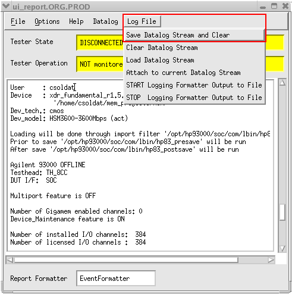

Saving the data log file
In the user interface window it is possible to save the data log file by choosing .
Note Enable the event formatter first to get the Save Datalog Stream and
Clear menu item.

Optionally the data formatter can be enabled to convert BIN data to ASCII data. See Using the Event Formatter for further information.
Example for a data log file:
######## Started Testprogram Testflow ########################################## Test program Testflow of device /home/testuser1/mem_projects/hsm/xcnct_fundamental_r1.1 started on 08/09/05 at 15:32:53 on socbl183 by testuser1 Level device started on 08/09/05 at 15:32:53 Testflow started on 08/09/05 at 15:32:53 Site 1: P1 ======== Started Testsuite Execution_Engine ==================================== Executed Testmethod HSM_TEST,HsmTestExecute on Site 1: FAILED Equation Set 5; Spec Set 1; Timing Set 1 Equation Set 1; Spec Set 1; Level Set 1 Startlabel: f_rec14_ref_nis -------- HSM Result (f_rec14_ref_nis): FAILED ---------------------------------- -------- HSM Result (f_rec14_ref_nis : upcount_fail_rec_14_ref_nis)[1] Site1: FAILED ----- drv_16: PASSED drv_15: PASSED drv_14: PASSED drv_13: PASSED drv_12: PASSED drv_11: PASSED drv_10: PASSED drv_9: PASSED drv_8: PASSED drv_7: PASSED drv_6: PASSED drv_5: PASSED drv_4: PASSED drv_3: PASSED drv_2: PASSED drv_1: PASSED rec_16: PASSED rec_15: PASSED rec_14: FAILED rec_13: PASSED rec_12: PASSED rec_11: PASSED rec_10: PASSED rec_9: PASSED rec_8: PASSED rec_7: PASSED rec_6: PASSED rec_5: PASSED rec_4: PASSED rec_3: PASSED rec_2: PASSED rec_1: PASSED -------- Execution_Engine@@[1]: FAILED ----------------------------------------- Execution_Engine@@[1]: FAILED ======== Ended Testsuite Execution_Engine ====================================== Site 1 has PASSED. Binned to bin 1(-1) Testflow ended after 0.346 seconds on 08/09/05 at 15:32:54 Level ended after 0.433 seconds on 08/09/05 at 15:32:54 Test program terminated after 2.467 seconds on 08/09/05 at 15:32:56 ######## Ended Testprogram Testflow ############################################